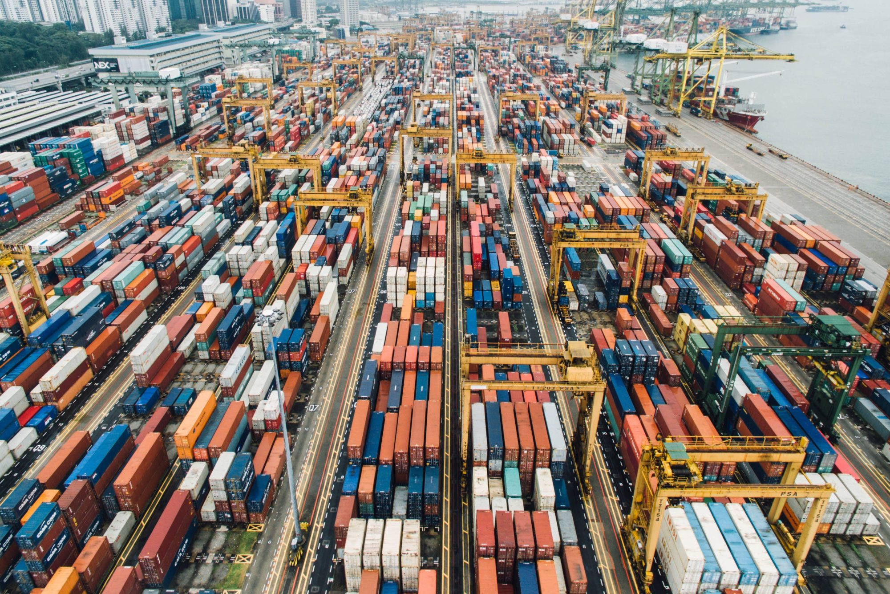

Intermodal transport er grunnlaget for moderne global handel. Men hva betyr egentlig begrepet, og hvordan revolusjonerte det verdensøkonomien?
Hva er intermodal transport?
Intermodal transport betyr å bruke to eller flere ulike transportmetoder for å flytte gods fra avsender til mottaker. Dette kan være kombinasjoner av lastebil, tog, skip og fly.
Det som gjør det intermodalt, er at godset forblir i samme container under hele transporten - lasten flyttes ikke mellom ulike emballasjer, kun containeren flyttes mellom ulike transportformer.
Fordelene med intermodal transport
- Redusert håndtering - mindre risiko for skade på gods
- Økt sikkerhet - containere forsegler lasten fra start til slutt
- Raskere transport - effektiv omlasting mellom transportformer
- Lavere kostnader - optimal bruk av hvert transportmiddel
- Mindre miljøpåvirkning - jernbane og skip er mer miljøvennlig for lange distanser
Historien som endret verden
På 1950-tallet var Malcolm McLean, eier av et lastebilselskap, frustrert over hvor lang tid det tok å losse og laste gods på skip. Han stilte et spørsmål som skulle forandre alt:
Dette enkle spørsmålet førte til "Containerization" - containerrevolusjonen som transformerte global handel. Ved å mekanisere lastehåndtering gjennom kraner og standardiserte containere, gjorde McLean godstransport raskere, billigere og sikrere.
Standard container-spesifikasjoner
Intermodale containere følger ISO-retningslinjer og kommer typisk i størrelser:
- 20 ft - kalles "TEU" (Twenty-foot Equivalent Unit)
- 40 ft - tilsvarer 2 TEU
- 45 ft - populær i Europa
- 48 ft og 53 ft - brukes primært i Nord-Amerika
Visste du?
Omtrent 25 millioner containere transporteres via intermodal frakt hvert år. Det er nok containere til å rekke rundt hele jorden flere ganger hvis de ble plassert ende til ende!
Slik fungerer intermodal transport i praksis
Et typisk eksempel på intermodal transport:
- Lastebil - henter container hos produsent
- Tog - frakter container til havn
- Skip - transporter containeren over hav
- Tog/lastebil - leverer til endelig destinasjon
Under hele prosessen forblir godset inne i samme container, noe som gir enorm effektivitetsgevinst.
Containere utover transport
I dag brukes containere ikke bare til transport. Hos Boxxy ser vi daglig hvordan disse robuste enhetene får nytt liv som:
- Lagringslø sninger for bedrifter og privatpersoner
- Mobile kontorer
- Pop-up butikker
- Midlertidige verksteder
- Sikker oppbevaring på byggeplasser
Trenger du en container?
Hos Boxxy tilbyr vi containere for utleie - nye og brukte
Utforsk våre løsningerKonklusjon
Intermodal transport med standardiserte containere har gjort verden mindre. Takket være Malcolm McLeans visjon kan vi i dag få produkter fra andre siden av kloden raskt og rimelig. Og disse samme containerne som frakter varer globalt, kan også være den perfekte lagringsløsningen for ditt behov!